리눅스마스터-2급 (2011-09-03 기출문제)
1과목: 리눅스 운영 및 관리
1. 리눅스 파일의 퍼미션을 설정하는 사용자 구분으로 틀린 것은?
- 소유자(owner)
- 그룹(group)
- 관리자(administrator)
- 타인(other)
(정답률: 84%)

2. readme.txt 라는 파일에 대하여 소유자, 소속그룹 및 그 외 사용자까지 읽기, 쓰기, 실행 권한을 부여하기 위한 명령과 옵션으로 알맞은 것은?
- chmod 777 readme.txt
- chmod 411 readme.txt
- chmod 333 readme.txt
- chmod 101 readme.txt
(정답률: 94%)
3. 콘솔에서 출력되는 파일정보 중에 기호링크 파일임을 의미하는 파일속성 문자로 알맞은 것은?
- b
- c
- l
- d
(정답률: 69%)
4. 현재 사용 중인 로그인 쉘(shell)을 바꾸기 위한 명령으로 알맞은 것은?
- chgrp
- chsh
- alias
- cp
(정답률: 92%)
5. 원래 Bourn-Again Shell이라는 쉘의 명칭으로 리눅스 운영체제에서 기본적으로 사용하는 쉘 명칭으로 알맞은 것은?
- tsh
- korn
- c
- bash
(정답률: 92%)
6. 리눅스 파일 시스템에 대한 설명으로 틀린 것은?
- superblock은 파일시스템 크기와 같은 전체적인 파일시스템에 대한 정보를 갖는다.
- inode는 파일종류, 소유주권 등의 정보를 갖고 있다.
- nfs는 MS-DOS 파일시스템의 FAT과 호환을 위해 사용한다.
- iso9660은 표준 CD-ROM 파일 시스템이다.
(정답률: 63%)
7. 파티션에 존재하는 파일 훼손을 검사하고 바로잡기 위한 fsck의 명령 옵션으로 오류 파일에 대한 자동수리(복구)와 검사도중 에러발생 시 복구 유무를 물어보는 옵션으로 알맞은 것은?
- -a, -r
- -a
- -A
- -s, -r
(정답률: 62%)
8. 파일 시스템 생성을 위한 명령어인 mkfs에 대한 설명으로 틀린 것은?
- 새 하드디스크를 추가하거나 이전 하드디스크의 파티션 정보를 변경할 수 있다.
- -c 옵션은 파일시스템을 만들기 전에 불량 블록검사를 한다.
- 성공적으로 장치에 대한 설정이 완료되면 1, 실패하면 0을 리턴한다.
- -t 옵션은 생성하는 파티션의 종류를 지정한다.
(정답률: 40%)
9. 사용자 계정 ihd의 홈디렉토리인 /home/ihd에 설정된 Quota를 활성화 하기 위한 명령으로 알맞은 것은?
- quotacheck
- quota
- quotaon
- chkdsk
(정답률: 69%)
10. 다음 중 파일시스템의 사용한 용량과 사용 가능한 용량정보를 보여주는 명령어로 알맞은 것은?
- df
- du
- chgrps
- fsck
(정답률: 67%)
11. 프로세스들 간의 연결구조를 부모프로세스, 자식 프로세스 형태로 보여주는 명령으로 알맞은 것은?
- pstree
- ls
- ps
- kill
(정답률: 87%)
12. 윈도우 운영체제의 Windows 작업관리자처럼 프로세스 정보를 나타내는 리눅스 명령어로 알맞은 것은?
- ps
- kill
- signal
- touch
(정답률: 88%)
13. 프로세스 상태확인 명령어 ps를 옵션 없이 사용하였을 경우 확인할 수 있는 정보로 틀린 것은?
- PID : 프로세스 식별번호
- TTY : 프로세스와 연결된 터미널 포트
- TIME : 프로세스가 사용한 CPU 사용시간
- STAT : 프로세스 현재 상태
(정답률: 30%)
14. 프로세스 상태 명령에 의한 결과이다. 이 중 RSS가 의미하는 정보로 알맞은 것은?
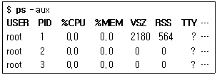
- 연결터미널 포트
- 실제 메모리 사용량
- 중앙처리장치 사용비율
- 프로세스 시작 시간
(정답률: 77%)
15. ps -aux라는 프로세스 상태정보 명령문을 통해 출력되는 정보 중에 STAT상태 정보표현 기호와 설명이 틀린 것은?
- R : 실행중인 상태
- S : Sleep 상태
- I : 간접적 접속상태
- P : Page 관련 대기상태
(정답률: 49%)
16. 리눅스 시스템에서 현재 실행중인 DBMS 엔진의 실행 상태를 강제 중단하고자 할 때 사용할 명령으로 가장 알맞은 것은?
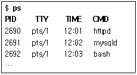
- kill – 9 2690
- del – 9 2690
- kill – 9 2691
- rm – 9 2691
(정답률: 75%)
17. 프로세스 종료 명령인 kill 명령에서 현재 작업중인 프로그램의 메모리 액세스가 잘못 되었을 때 사용하는 것으로 알맞은 것은?
- SIGHUP
- SIGSEGV
- SIGTERM
- SIGINT
(정답률: 38%)
18. CPU를 사용하는 프로세스 중에서 10개의 프로세스만을 보려고 할 경우의 명령으로 알맞은 것은?
- top #10
- top i10
- top M10
- top r10
(정답률: 61%)
19. nice 명령에 대한 설명으로 알맞은 것은?
- 프로세스들의 우선순위를 변경할 때 사용하는 명령
- 정기적으로 명령이나 프로세스를 스케줄링하는 명령
- 한번에 프로그램을 종료할 때 사용하는 명령
- 상위 프로세스가 몇 개 실행되고 있으며, 어떤 데몬들이 실행되고 있는지를 확인하는 명령
(정답률: 83%)
20. crontab 명령을 사용하기 위해 필요한 입력 단위 값에 포함되지 않는 것은?
- 요일(weekday)
- 월(month)
- 날짜(day)
- 연도(year)
(정답률: 81%)
21. 다음 중 쉘이 자체적으로 처리하는 내부 명령에 해당하지 않는 것은?
- alias
- cd
- ls
- set
(정답률: 53%)
22. 다음 중 파일이나 디렉터리에 대한 경로명을 그 값으로 가지는 환경 변수로 틀린 것은?
- HOME
- PATH
- PS1
(정답률: 40%)
23. 다음 중 환경 변수 PWD의 값에 영향을 미치는 명령으로 알맞은 것은?
- cat
- cd
- pwd
- ps
(정답률: 53%)
24. 다음 중 명령 chsh와 가장 관련이 깊은 환경변수로 알맞은 것은?
- SHELL
- PATH
- HOME
- TERM
(정답률: 74%)
25. 사용자 계정의 로그인 쉘이 지정되어 있는 파일로 알맞은 것은?
- /etc/shells
- /etc/rc.d
- /etc/passwd
- /etc/bashrc
(정답률: 62%)
26. 프로그램의 표준 입출력을 파일로 지정할 수 있게 하는 기능으로 알맞은 것은?
- 입출력 리다이렉션(I/O redirection)
- 파이프(pipe)
- 히스토리(history)
- 별명(alias)
(정답률: 67%)
27. .bashrc 파일의 내용을 바꾼 후, 다시 로그인 하지 않고 변경된 내용을 적용하려고 할 때 명령으로 알맞은 것은?
- set
- history
- source
- restart
(정답률: 27%)
28. 다음 중 그 성격이 다른 하나는?
- bash
- ssh
- ksh
- csh
(정답률: 80%)
29. 다음 vi 에디터의 명령들 중 그 성격이 다른 것은?
- a
- O
- I
- ESC
(정답률: 82%)
30. 다음 vi 에디터의 명령들 중 텍스트 패턴 검색 명령으로 틀린 것은?
- /
- $
- n
- ?
(정답률: 45%)
31. vi 에디터 사용 시 편집 내용을 파일로 저장할 때 저장 명령을 수행할 수 있는 모드로 알맞은 것은?
- 입력 모드
- 명령 모드
- Ex 모드
- 삽입 모드
(정답률: 48%)
32. 다음 중 vi 에디터 사용 중 복사하거나 잘라낸 문자열을 붙여넣기 위해 사용하는 명령으로 알맞은 것은?
- p
- w
- b
- c
(정답률: 60%)
33. 다음 vi 에디터의 명령들 중 성격이 다른 것은?
- ^F
- ^L
- ^B
- ^D
(정답률: 41%)
34. vi를 사용하던 중 vi를 종료하지 않은 채 현 디렉터리 목록을 볼 수 있는 vi 명령은 무엇인가?
- :!ls
- :@ls
- :exec:ls
- :&ls
(정답률: 54%)
35. rpm 명령이 가진 기능으로 볼 수 없는 것은?
- 소프트웨어 패키지 설치
- 소프트웨어 패키지 업그레이드
- 소프트웨어 패키지에 대한 정보 질의
- 소프트웨어 패키지의 배포
(정답률: 77%)
36. rpm 명령의 옵션 중 패키지 정보에 대한 질의 옵션으로 틀린 것은?
- -q
- -i
- -f
- -p
(정답률: 30%)
37. rpm 명령의 옵션 중 패키지에 포함된 파일에 대해 소유자, 형식, 크기 등을 비교하여 파일의 이상 여부를 검증하는 옵션으로 알맞은 것은?
- -V
- -U
- -e
- -v
(정답률: 56%)
38. rpm 명령의 옵션 중 패키지 설치 또는 업데이트 과정에서 진행 상태를 보여주는 옵션으로 알맞은 것은?
- -v
- -h
- -x
- -c
(정답률: 49%)
39. 다음 rpm 패키지 파일의 이름 중 몇 번째로 만든 패키지인지를 나타내는 릴리즈(release)로 알맞은 것은?
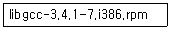
- libgcc
- 3.4.1
- 7
- i386
(정답률: 73%)
40. rpm 명령의 옵션 중 패키지 내의 설정 파일들에 대한 정보를 출력하는 옵션으로 알맞은 것은?
- -qi
- -ql
- -qd
- -qc
(정답률: 22%)
41. 일반적으로 압축된 파일의 확장자가 .Z로 압축 파일이 만들어지는 압축 유틸리티로 알맞은 것은?
- compress
- zip
- gzip
- bzip2
(정답률: 55%)
42. 다음 압축된 tar 파일 test.tar.gz에 대해 압축을 해제하고, tar로 묶인 파일들을 모두 풀기 위한 명령의 실행 예에서 ( 괄호 ) 안에 들어갈 기호로 알맞은 것은?
- *
- ?
- -
- &
(정답률: 27%)
43. report.txt라는 파일을 lp라는 이름의 프린터를 이용하여, 인쇄매수 2매를 출력하고자 할 때 명령으로 알맞은 것은?
- lpr -C2 -P lp report.txt
- lpr -$2 -P lp report.txt
- lpr -#2 -P lp report.txt
- lpr -&2 -P lp report.txt
(정답률: 68%)
44. 리눅스 프린터 설치(설정) 과정 순서가 알맞은 것은?
- 프린터 종류 → 프린터 큐 → 프린터 기종 → 프린터 드라이버
- 프린터 큐 → 프린터 종류 → 프린터 드라이버 → 프린터 기종
- 프린터 종류 → 프린터 큐 → 프린터 드라이버 → 프린터 기종
- 프린터 드라이버 → 프린터 기종 → 프린터 큐 → 프린터 종류
(정답률: 61%)
45. 다음 ( 괄호 ) 안에 들어갈 공통의 용어로 알맞은 것은?
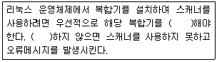
- install
- setup
- compile
- mount
(정답률: 69%)
46. /dev/sda2 파일의 일반적인 설명으로 알맞은 것은?
- 첫 번째 IDE 타입 하드디스크의 두 번째 파티션
- 두 번째 IDE 타입 하드디스크의 두 번째 파티션
- 첫 번째 SCSI 타입 하드디스크의 두 번째 파티션
- 두 번째 SCSI 타입 하드디스크의 두 번째 파티션
(정답률: 62%)
47. 리눅스 프린터 작동에 관한 명령으로 틀린 것은?
- lpc
- lprm
- lpq
- lps
(정답률: 74%)
48. 다음 중 리눅스 시스템의 오디오파일 재생 프로그램이 아닌 것은?
- xmms
- vi
- Amarok
- Audacious
(정답률: 86%)
2과목: 리눅스 활용
49. X 윈도우는 유닉스 시스템의 표준 그래픽 인터페이스이다. 표준 X 어플리케이션과 설명이 틀린 것은?
- Xclock –간단한 시계 표시
- xterm –텍스트기반 터미널 에뮬레이터
- Xman –X 기반의 man 페이지
- xlm –로그인 관리자
(정답률: 58%)
50. X 프로토콜로 통신하는 기본 메시지가 아닌 것은?
- Request
- Response
- Error
- Event
(정답률: 37%)
51. 다음 중 ( 괄호 )안에 들어갈 내용으로 알맞은 것은?
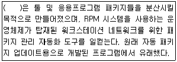
- Yup
- Yum
- Tripwire
- UpdateManager
(정답률: 81%)
52. 다음 설명 중 ( 괄호 )에 들어갈 내용으로 알맞은 것은?
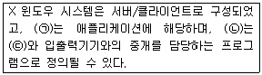
- (ㄱ)서버 – (ㄴ)클라이언트 - (ㄷ)클라이언트
- (ㄱ)서버 - (ㄴ)클라이언트 - (ㄷ)서버
- (ㄱ)클라이언트 – (ㄴ)서버 - (ㄷ)클라이언트
- (ㄱ)클라이언트 – (ㄴ)서버 - (ㄷ)서버
(정답률: 64%)
53. 윈도우 메이커(Window Maker)에서 사용하는 것으로 단축키 [Alt]+[1]~[3]으로 바꿀 수 있는 것은 무엇인가?
- 도크
- 가상화면
- 환경설정
- 패널
(정답률: 46%)
54. KDE에서 웹브라우저 및 파일관리 기능을 담당하는 응용프로그램인 Konqueror가 지원하는 편리한 파일관리 기능으로 틀린 것은?
- 파일이나 폴더열기
- 드래그 앤 드롭
- 파일의 속성설정
- 원격 터미널 접속
(정답률: 65%)
55. 다음 중 리눅스 시스템의 X 윈도우에서 동작하는 이미지 관련 프로그램이 아닌 것은?
- ImageMagick
- xv
- Photoshop
- GIMP
(정답률: 56%)
56. 다음 중 멀티미디어 재생 프로그램이 아닌 것은?
- RealPlayer
- GIMP
- XMMS
- BMP
(정답률: 60%)
57. 근거리 통신망인 LAN의 분류 방법인 토폴로지(topology)에 의한 분류로 알맞은 것은?
- Linear topology
- Circle topology
- Ring topology
- Network topology
(정답률: 50%)
58. 아래 토큰링에 대한 설명 중 ( 괄호 )에 들어갈 내용으로 알맞은 것은?
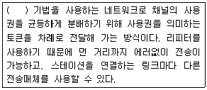
- Token passthrough
- Token out
- Token sending
- Token passing
(정답률: 71%)
59. 다음에서 설명하는 네트워크 구성(topology)은 무엇인가?
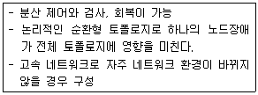
- Mesh topology
- Ring topology
- Bus topology
- Star topology
(정답률: 62%)
60. 다음 패킷교환기술의 특징을 갖고 있는 프로토콜에 대한 설명에 해당하는 것으로 알맞은 것은?
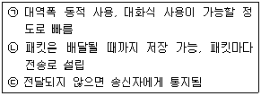
- X.25
- CSMA/CD
- Ethernet
- IPX
(정답률: 36%)
61. TCP/IP 내부 스택과 해당 프로토콜이 알맞은 것은?
- 응용계층 : telnet, FTP, HTTP
- 전송계층 : TCP, IP, DNS
- 인터넷 : ICMP, UDP, SMTP
- 네트워크 접근 : 이더넷, 토큰링, FDDI, ARP 등
(정답률: 52%)
62. 다음 프로토콜의 기본 기능에 대한 설명 중 ( 괄호 )에 들어갈 내용으로 알맞은 것은?
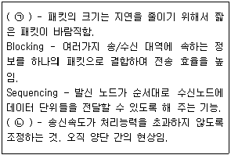
- (ㄱ) Segmentation, (ㄴ) Flow Control
- (ㄱ) Error Control, (ㄴ) Flow Control
- (ㄱ) Segmentation, (ㄴ) Interrupt
- (ㄱ) Error Control, (ㄴ) Interrupt
(정답률: 67%)
63. 다음 중 telnet으로 시스템에 접속했을 때, 로그인 하기 전에 사용자에게 해당 시스템에 대한 설명을 알리는 문구를 설정하기 위한 파일로 가장 적절한 것은?
- /etc/passwd
- /etc/init.d
- /etc/motd
- /etc/issue.net
(정답률: 43%)
64. 메일서비스를 사용하기 위해서 적용되는 인터넷 전송규약과 서비스 프로그램 연결이 틀린 것은?
- IMAP(Internet Message Access Protocol) - imapd
- ICMP(Internet Control Message Protocol) - inetd
- SMTP(Simple Mail Transfer Protocol) - sendmail
- POP(Post Office Protocol) - qpopper
(정답률: 57%)
65. 다음에서 설명하는 것으로 알맞은 것은?
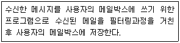
- MUA(Mail User Agent)
- MTA(Mail Transfer Agent)
- MDA(Mail Delivery Agent)
- MTU(Mail Transfer Unit)
(정답률: 40%)
66. 리눅스 상에서 사용하는 GUI 기반의 FTP 클라이언트로 알맞은 것은?
- gFTP
- lftp
- ncftp
- lukemftp
(정답률: 73%)
67. 다음 중 Secure 기반의 원격제어 서비스와 연관이 없는 것은?
- ssh
- scp
- smv
- sftp
(정답률: 53%)
68. 다음 중 전송규약(Protocol)과 해당하는 서버 프로그램의 연결이 틀린 것은?
- FTP – proftpd
- SMTP - qmail
- HTTP – mozilla
- DNS - named
(정답률: 51%)
69. IP주소를 기억하기 쉬운 문자(이름) 주소로 변환시켜 주는 프로토콜로 알맞은 것은?
- DNS
- NFS
- DHCP
- HTTP
(정답률: 78%)
70. 리눅스에서 서비스 가능한 프로토콜 목록이 정의된 시스템 설정파일로 알맞은 것은?
- /etc/protocols
- /etc/services
- /dev/protocols
- /dev/services
(정답률: 50%)
71. 다음 중 아래와 같이 Kernel IP routing table을 확인할 수 있는 명령으로 알맞은 것은?
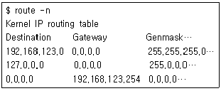
- netstat
- traceroute
- hostname
- ifconfig
(정답률: 50%)
72. 다음에서 설명하는 것으로 알맞은 것은?
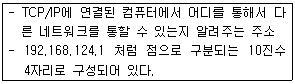
- Netmask Address
- Gateway Address
- Domain Name
- Host Name
(정답률: 65%)
73. 일반적으로 설치된 LAN 카드 중 첫 번째 LAN 카드의 IP주소를 변경할 때 수정해야할 설정 파일이 절대경로를 포함하여 알맞은 것은?
- /etc/network-scripts/ifcfg-eth0
- /etc/sysconfig/network
- /etc/sysconfig/network-scripts/ifcfg-eth0
- /etc/sysconfig/ifcfg-eth0
(정답률: 72%)
74. 첫번째 이더넷카드에 IP주소를 설정하려고 할 때 ( 괄호 )에 들어갈 내용으로 알맞은 것은?
- dev –netmask
- dev0 - subnet
- eth0 –subnet
- eth0 - netmask
(정답률: 68%)
75. 다음의 네트워크 설정파일과 명령어를 통해서 공통적으로 변경되는 것은?
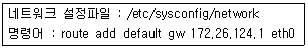
- Network Address
- IP Address
- Gateway Address
- DNS Address
(정답률: 70%)
76. TCP와 UDP 프로토콜에 대한 설명으로 알맞은 것은?
- UDP : 안정적인 비접속 데이터그램 프로토콜
- UDP : 전송되는 데이터 패킷의 순서를 제공
- TCP : 접속기반의 바이트 스트림 프로토콜
- TCP : 전 이중 방식이나 신뢰성은 보장할 수 없음
(정답률: 68%)
77. 리눅스 활성화를 위한 선결과제가 아닌 것은?
- 고객에게 신뢰를 줄 수 있는 사례 지속적 발굴
- 우수한 전문 리눅스 엔지니어 배출
- 외부 컨설팅에만 의존
- 리눅스 기술력 확보
(정답률: 83%)
78. 모바일 시장을 양분하는 플랫폼으로 오픈소스 운영체제인 리눅스를 기반으로 하는 구글의 스마트폰 운영체제로 알맞은 것은?
- LiMo
- iOS
- Bada
- Android
(정답률: 73%)
79. 다음 중 클러스터 시스템의 기능 또는 종류가 아닌 것은?
- 병렬처리
- 부하분산
- 고가용성
- 무결성
(정답률: 68%)
80. 다음 중 병렬처리 시스템과 가장 관련이 적은 것은?
- MPI(Message Passing Interface)
- Beowulf Cluster Architecture
- Embedded Realtime Linux
- MPP(Massively Parallel Processing)
(정답률: 43%)